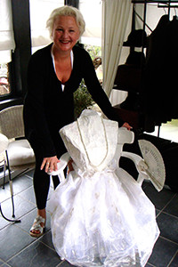

Dauerhafte Ausstellung mit wechselnden Werken.
Im eigenen Atelier
Ute Wollmann (SPD) war positiv überrascht von der Ausstellung.
Stadtsparkasse im Juni
Auch die Herren Hellmann, Püschel und Schmeink sehen gerne „große" Kunst.
Besuch der Bürgermeisterin Dr. Bettina Warnecke
Haaner Treff, Text von Susanne Schaper
Bürgermeisterin Dr. Bettina Warnecke vor Holzschnitt „Fünf auf einen Streich"
"Sabine-Marie Schilling zeigte unter anderem 'Die Haanerin'. Zwei Selbst-Porträts sind das, die mit Hilfe von Holzschnitten mehrfach übereinander gedruckt wurden."
Stuhldesignerin, Haan
Copyright © 2026 · Sabine Marie Schilling · Impressum